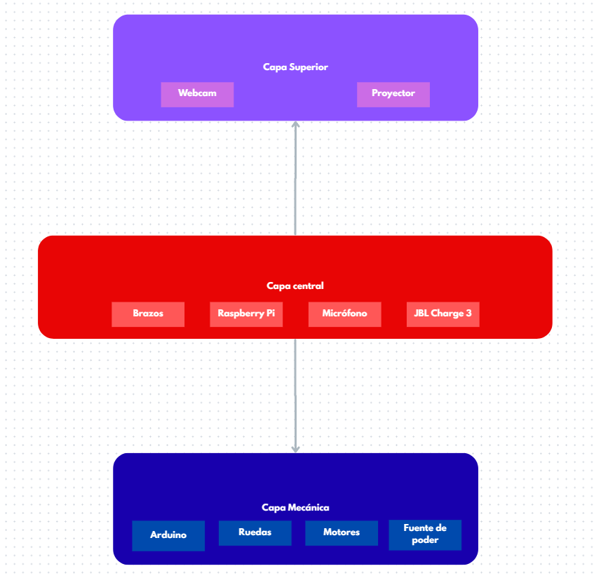
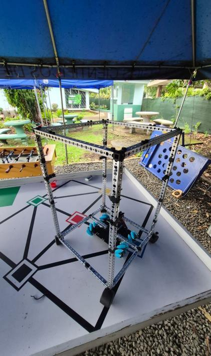
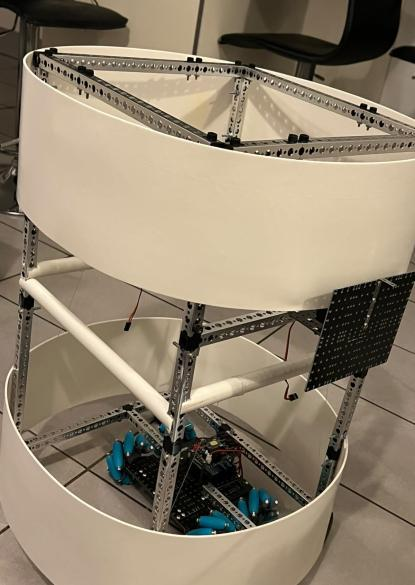
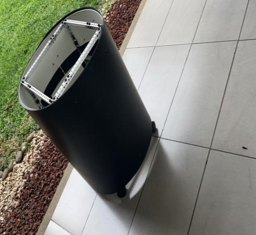
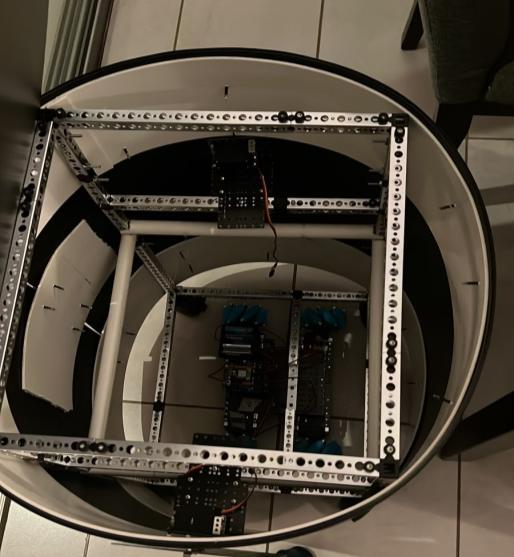
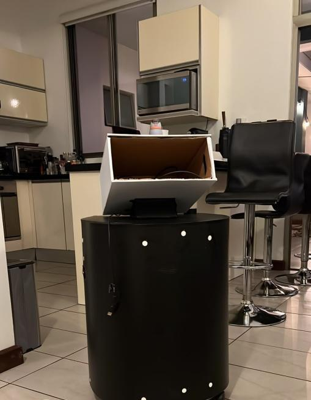
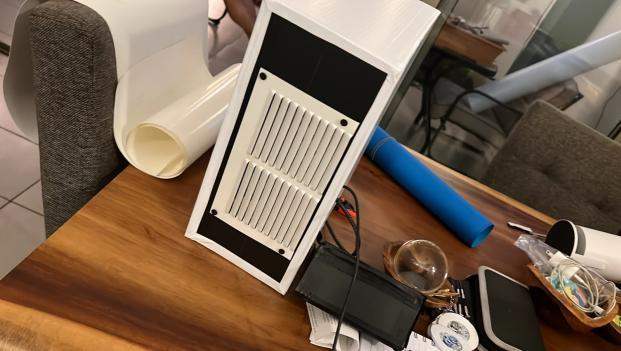
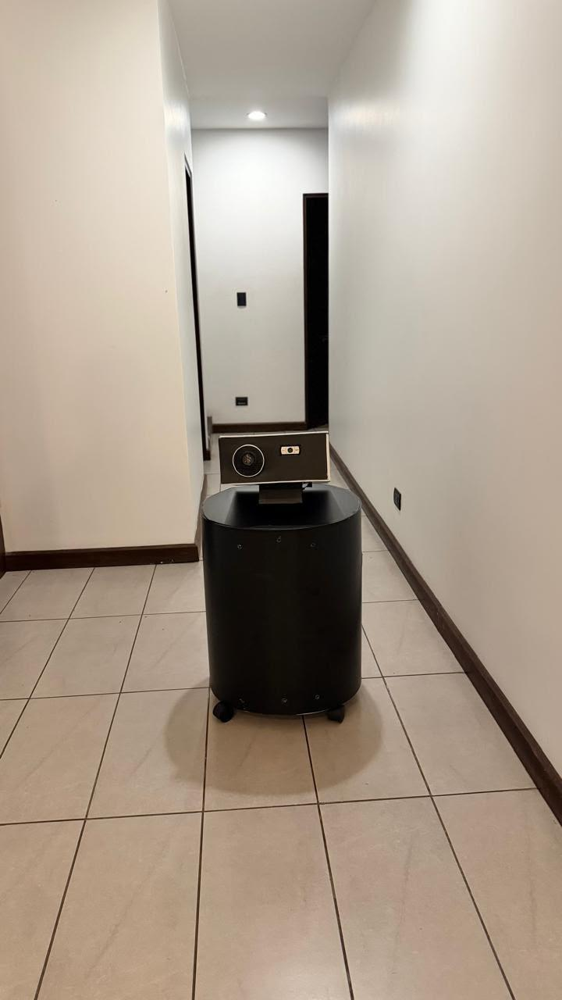

Multisensory
Experiencias con visión, sonido, movimiento y proyección. La cultura se vive con todos los sentidos.
WRO 2026 · ROBOTS AND CULTURE · COSTA RICA
Multisensory · Engineering · Cyberphysical · Humanized
Un expositor autónomo que combina inteligencia artificial, proyección inmersiva y movimiento físico para que ninguna historia se quede sin contar.
¿QUÉ ES M.E.C.H?
Experiencias con visión, sonido, movimiento y proyección. La cultura se vive con todos los sentidos.
Ingeniería integrada: sistemas físicos y mecatrónicos diseñados y ensamblados por el propio equipo.
Firmware propio que une lo digital con lo físico: la IA decide y los motores, luces y proyectores obedecen.
Diseñado para la experiencia humana: reacciona a las personas, escucha y responde en español.
LA PROBLEMÁTICA
Hoy es difícil encontrar un museo donde cada obra tenga una exposición viva que la explique. Ante esa distancia, la sociedad pierde interés por el arte y las tradiciones se van apagando. MECH ataca ese problema con espacios inmersivos que narran cualquier obra con solo pedírselo por voz — una manera innovadora, escalable y fácil de comprender de darle visibilidad a los artistas de cada región.
IMPACTO SOCIAL
Convierte cualquier sala en una exposición viva: la obra se explica sola, con emoción, al alcance de un comando de voz.
MECH‑1 cubre un trabajo que hoy casi ningún museo implementa. Es un complemento a la labor humana, no una amenaza.
Artistas locales pueden exponer su obra de forma autónoma, sin pagar un expositor — más económico y accesible.
«El objetivo final es claro: aportar a un mundo más lleno de cultura.» — Trabajo escrito de MECH, WRO 2026

EL EQUIPO
Supervisó la producción y materialización del robot, cuidando que cada componente fuera amigable con el diseño. Clave para iterar prototipos y lograr un ecosistema inmersivo funcional y estético.
Diseñó los sistemas mecatrónicos y el «desarrollo neuronal» del robot: cada orden y tarea que MECH‑1 ejecuta nació de sus esquemas y diagramas de orquestación.
El puente entre la estructura y el cerebro: desarrolló los sistemas de movimiento, energía, comunicación, sonido y visión que dan vida al proyecto.
MECH‑1 · PROTOTIPO FUNCIONAL
Un expositor cultural autónomo, diseñado y construido desde cero: estructura, electrónica, firmware e identidad visual.
Proyector HD para el espacio inmersivo y cámara Logitech C930e con 90° de visión para detectar a quien se acerca.
Despierta con la voz, escucha aun con ruido de evento y responde en español. Un aro de 12 LEDs le pone cara a cada fase: escuchando, pensando, narrando.
Ruedas omnidireccionales tipo mecanum: gira hacia el visitante, se acerca, gesticula con los brazos y acompaña cada relato con movimiento real.
CÓMO FUNCIONA
Todo el flujo lo orquesta una Raspberry Pi 5 dentro del robot. La IA recibe una sola consulta y devuelve el guion completo de la exposición: rápido, económico y predecible.
El micrófono inalámbrico capta tu voz y faster‑whisper la transcribe 100% local, sin depender de internet.
STT · EN LA PIClaude (Anthropic) recibe la petición y devuelve un plan estructurado: narración por escenas, visuales y gestos.
IA · 1 REQUESTLa voz se genera con ElevenLabs en español — incluso con voces distintas por personaje.
TTS · STREAMINGVideos pre‑renderizados de la biblioteca cultural, o imágenes generadas al vuelo con Gemini si pides algo nuevo.
VIDEO + IMAGENUn Arduino Uno ejecuta gestos con los brazos, giros con las ruedas mecanum y anima el aro de LEDs.
FIRMWARE · SERIALHARDWARE

BIBLIOTECA CULTURAL
Cada obra vive en la biblioteca del robot con videos pre‑renderizados por escena. ¿Pides algo que no está? MECH‑1 improvisa la narración y genera las imágenes en vivo. Desliza →
Un hidalgo enloquecido por las novelas de caballería sale junto a Sancho Panza a buscar aventuras imposibles.
Costa Rica y Centroamérica se unen para expulsar al filibustero William Walker. La gesta de Juan Santamaría en la Batalla de Rivas.
Esferas y figuras en mármol y bronce: la serie «Génesis» fusiona el simbolismo precolombino de Costa Rica con la transformación y la vida.
El folclor y el rock de Fidel Gamboa: paisajes, nostalgia y el alma de Costa Rica en cada canción.
Pionero costarricense del realismo mágico: toros rojos, soles y lunas que retratan la mística rural con color vibrante.
La biblioteca es abierta: cualquier museo o artista puede sumar su obra con videos por escena — MECH‑1 la contará al día siguiente.
BITÁCORA DE CONSTRUCCIÓN
Siete etapas, cero atajos. Desliza para ver la evolución →






